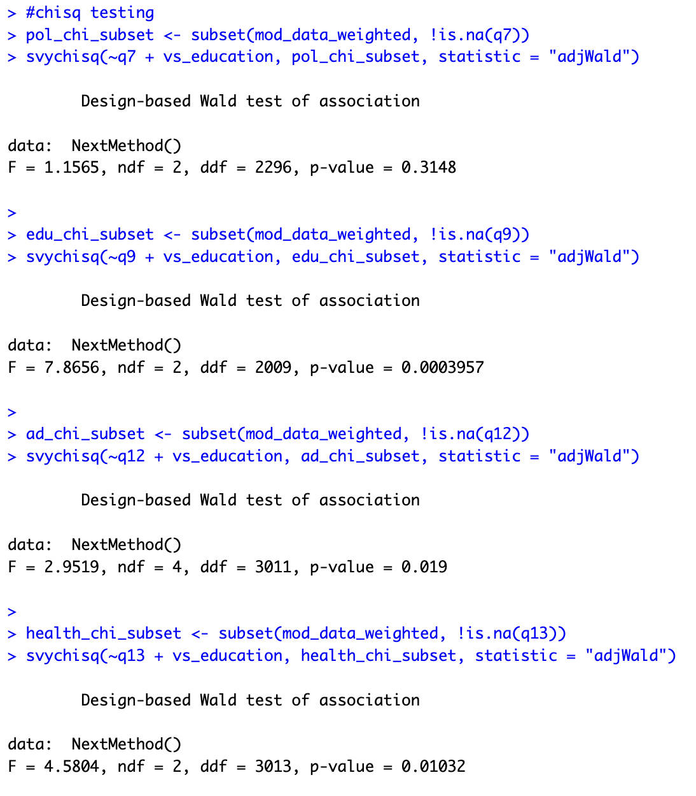
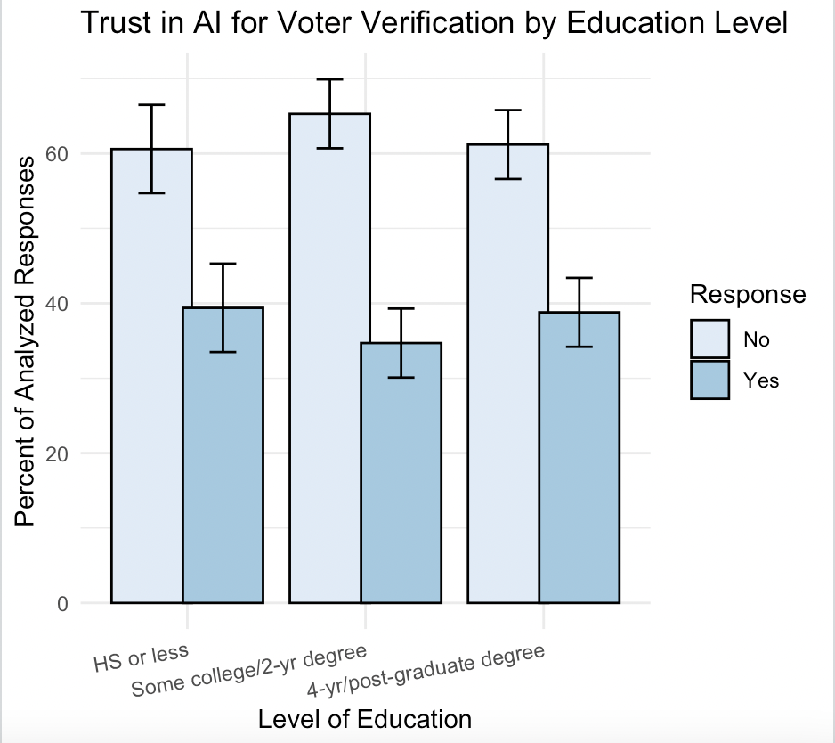
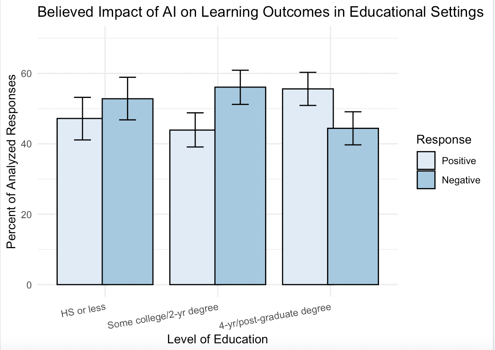
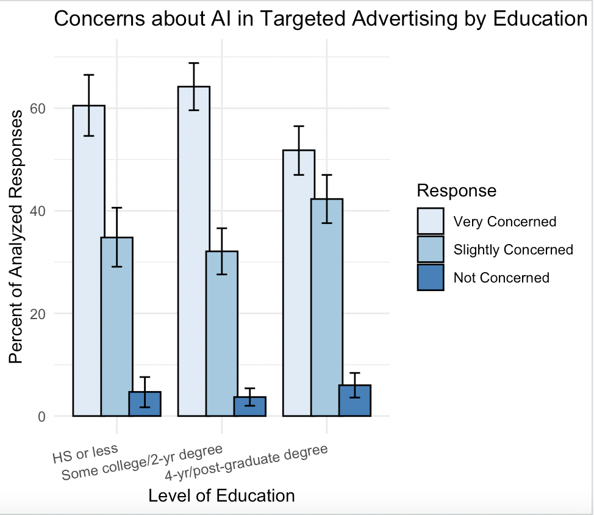
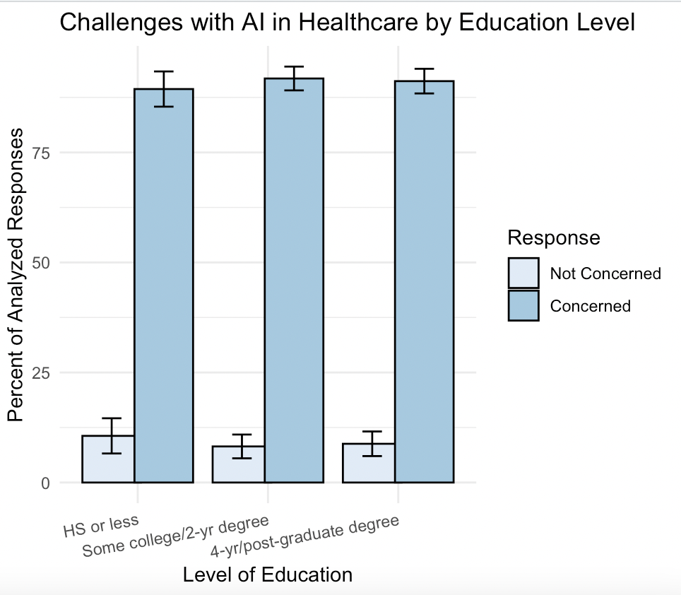
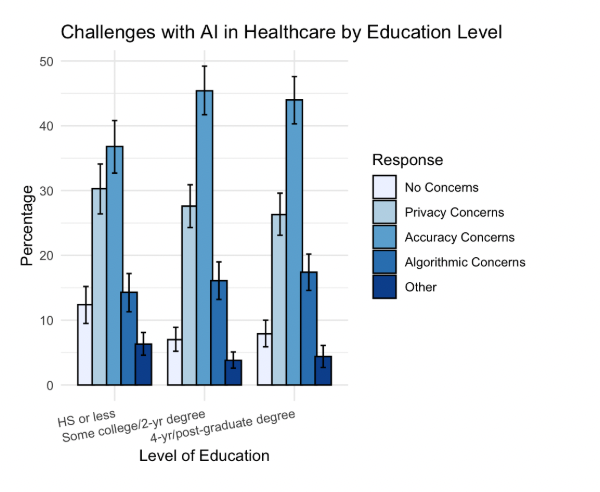

Project Overview
As part of a group project in a Cornell University course, we conducted a survey analysis to explore how demographic differences influence trust in AI across four sectors: politics, healthcare, advertising, and education. Our research was based on responses to four targeted survey questions.
Research Process
Key steps included:
- Research Design: Developed the research question: “How do differences in demographics influence trust in AI across various sectors?”
- Survey Data Selection: Selected four survey questions addressing AI trust in politics, healthcare, advertising, and education.
- Data Analysis: Applied survey weights, recoded answer categories, and performed chi-squared tests against demographic variables.
- Visualization: Created barplots to highlight significant differences by education level.
- Poster Presentation: Synthesized findings and presented insights in a comprehensive poster.
Key Findings
- Education is a statistically significant factor influencing trust in AI for healthcare, advertising, and education, but not for politics.
- People without a college education are more skeptical of AI in education, likely due to familiarity differences.
- Concerns about AI in healthcare center around accuracy and privacy, consistent across education levels.
- Trust in AI for vote-count verification may be more influenced by political affiliation than education.
Personal Contribution
I contributed to drafting the research question, conducting data analysis, and creating visualizations to support our findings.
Skills Demonstrated
- Survey data analysis and visualization using R and RStudio.
- Statistical testing with chi-squared analysis.
- Collaborative research and presentation skills through poster creation.
Key Visualizations






Data Analysis
The reproducible code is hosted locally in RStudio and available upon request.